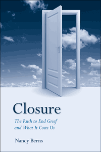

<body bgcolor="#FFFFFF" text="#000000" link="#0000FF" vlink="#CC0000" alink="#CC0000"><center><hr width="350" size="1" align="center" noshade>Do we really need closure after bad things happen?<hr width="350" size="1" align="center" noshade><p><a href="https://cdcshoppingcart.uchicago.edu/Cart/ChicagoBook.aspx?ISBN=9781439905760&&PRESS=temple" target="_top">Buy this book!</a> | <a href="https://cdcshoppingcart.uchicago.edu/Cart/Cart.aspx?PRESS=temple" target="_top">View Cart</a> | <a href="https://cdcshoppingcart.uchicago.edu/Cart/Cart.aspx?PRESS=temple" target="_top">Check Out</a></p><p></p></center><!--none//--><h1>Closure</h1>
<H2>The Rush to End Grief and What It Costs Us</H2>
<h3>Nancy Berns</h3>
<P>cloth 1-43990-576-2 $80.50, Aug 11, <FONT COLOR=#990033>Available</FONT>
<br>paper 1-43990-577-0 $26.95, Aug 11, <FONT COLOR=#990033>Available</FONT>
<br>Electronic Book 1-43990-578-9 $26.95 <FONT COLOR=#990033>Available</FONT>
<BR> 228 pp
6x9
1&nbsp;table
</P><h3 align="center"><P><font color="#996633">Charles Horton Cooley Award for Best Book from the Society for the Study of Symbolic Interaction,
2013</font></P>
<P><font color="#996633">Honorable Mention from the Sociology of Emotions section of the American Sociological Association,
2012</font></P>
</H3>
<BLOCKQUOTE><I>"</I>Closure<I> examines how contemporary Americans—with their inalienable right to pursue happiness—have created a new emotion to help themselves deal with disappointment, loss, and grief. The need to find closure can justify forgetting or remembering, moving on or getting even, to say nothing of making a buck. Sprinkled with examples that range from hilarious to heartbreaking, this book explores closure's many meanings and uses."</I><br>&#151<b>Joel Best</b>, University of Delaware, author of <I>Everyone's a Winner: Life in Our Congratulatory Culture</I></I></BLOCKQUOTE>
<p>When it comes to the end of a relationship, the loss of a loved one, or even a national tragedy, we are often told we need “closure.” But while some people do find closure for their pain and grief, many more feel closure does not exist and believe the notion only promises false hopes. Sociologist Nancy Berns explores these ideas and their ramifications in her timely book, <i>Closure</i>.
<p>Berns uncovers the various interpretations and contradictory meanings of closure. She identifies six types of “closure talk,” revealing closure as a socially constructed concept&#8212;a “new emotion.” Berns also explores how closure has been applied widely in popular media and how the idea has been appropriated as a political tool and to sell products and services.
<p>This book explains how the push for closure&#8212;whether we find it helpful, engaging, or enraging&#8212;is changing our society.
<BR>&nbsp;<h2>Excerpt</h2><P>Excerpt available at <a href="http://www.temple.edu/tempress">www.temple.edu/tempress</a></p>
<BR>&nbsp;<h2>Reviews</h2>
<p><I>"It is my great hope that Nancy Berns' wonderful book </I>Closure<I> will finally bring ‘closure’ to that most misused and unhelpful term. Berns offers a penetrating analysis that moves beyond the ways that the term is actually destructive to grieving individuals to a consideration of the formidable forces that keep such a notion in the forefront of our discourse on loss. This book is a ‘must read’ for anyone interested in the grieving process."</I>
<br>&#151<b>Kenneth J. Doka</b>, Professor, The College of New Rochelle, and Senior Consultant, The Hospice Foundation of America
<p><i>"[C]ompelling...Berns, who experienced a profound loss when she gave birth to a stillborn son, is here to reinforce what most of us intuitively know: feeling bad about losing a loved one never really ends. By commodifying the concept of closure in order to sell products and services, however, society has put pressure on us to conform to the prevailing 'feeling rules,' suggesting that disappointment, loss, and grief can and should come to an arbitrary end. Berns angrily dismisses this notion.... VERDICT Berns wisely counsels us to find other language and perspectives for living with grief, and this lucid debunking of the current use of the word 'closure' is a breath of fresh air, recommended for both general readers and specialists."</i><br>&#151<b><i>Library Journal</i></b>
<p><i>"Berns is strongest when she examines how closure gets taken up and used in interests in politics, media, the criminal justice system and, most convincingly, industry, in order to make a profit on people’s pain and suffering. Indeed, Berns’ ability to intersect a cultural analysis of closure with a critical justice analysis is powerful and compelling. It is here where she offers a unique analysis and where her meta-view as a sociologist crosses with her personal experience as a mourner to provide insight into how closure gets taken up in various cultural domains with ensuing negative consequences for the mourner. The book will be compelling reading for anyone interested in understanding the various ways in which mourning has changed over the last few decades, and more importantly the ways in which these shifts have affected a culture still struggling to come to grips with grief."</i><br>&#151<b><i>Mortality</i></b>
<p><i>"To the reader's likely great edification, Berns...works hard intellectually to separate knotty political, business, marketing, media, legal, cultural, sociological, ethical, religious, and psychological strands knottily entwining closure. The text is characterized by thoughtful, insightful discourse garbed with a cloak of great sensitivity.... The book is a boon to all grieving persons. Professionally, the book should, also, be richly rewarding to bereavement scholars, sociologists, mental health professionals, politicians, and to businesses in some way tethered to grief and closure."</i> <br>&#151<b><i>Metapsychology</i></b>
<p><i>"[P]articularly illuminating is Berns’ documentation of closure’s ‘tangled web’ of different, even opposing meanings."</i> <br>&#151<b><i>Cultural Sociology</i></b>
<p><i>"Berns’ book is a critical, thoughtful discussion, framing grief in attainable measures for clinicians, practitioners, service providers, educators, researchers, as well as anyone and everyone who has, or is, experiencing grief." </i><br>&#151<b><i>Journal of Social Work in End-of-Life & Palliative Care</i></b>
<p><i>"[A] well written and accessible book that provides a wealth of examples of the way in which managing loss is currently commercialised, marketed and consumed.... [H]ighly readable and informative, [and] full of anecdotes to illustrate the author's points.... an engaging and edifying text." </i><br>&#151<b><i>Cruse Bereavement Care</i></b>
<p><i>"[A] well-researched, theoretically-guided cultural analysis and critique of a new and socially-constructed emotion.... Berns’ arguments are compelling and backed up with sociological theory, data, and amusing anecdotes. Given the lively writing style, clear organization, lack of sociological jargon, and snappy synopses of current events and practices to achieve closure, this book will have great appeal to general audiences as well as undergraduates with limited backgrounds in sociology.... The book’s real strength is showing how the socially-constructed emotion of closure has been commodified, and used to sell products and services to the bereaved—who may yearn desperately for anything that will dull their pain or resolve their unanswered questions."</i> <br>&#151<b><i>Contemporary Sociology</i></b>
<p><i>"As a socially constructed concept, Berns argues, popular conceptions of closure are shaped in part through the ways in which it is used in politics, law, media, self-help and the funeral industries, causing individual processes of grieving and sense making to be intertwined with macro-level cultural and social conventions.... As the first volume to comprehensively examine closure across multiple contexts, Berns' volume is a sensitive, compelling, comprehensive and insightful exposition of a slippery and controversial subject.... Like any academic book worthy of a shelf spot in a permanent collection, Closure raises just as many questions as it answers (perhaps demonstrating the impossibility of gaining closure on closure)."</i> <br>&#151<b><i>Social Forces</i></b>
<p><i>"[A]nyone who reads this book would be disinclined ever to use the term </i>closure<i> without clarifying what they meant and would ask anyone else using the term to clarify what they meant.... At many places the writing in this book is excellent.... The book is helpful when it muddies the conceptual waters by going over the many different meanings of closure that can be found in journalistic accounts, research literatures, websites, and the like.... [T]he book is an important and useful document about closure and can be read for just that...one can also read the book for the questioning, the thinking, and the research ideas one can get to as one reflects on what the book says and does not say."</i> <br>&#151<b><i>Death Studies</i></b>
<BR>&nbsp;<h2>Contents</h2><P>
<p>Preface: My Own Tangled Story
<br>Acknowledgments
<br>1. Seeking Closure
<br>2. Closure and Its Tangled Meanings
<br>3. The Walking Wounded and Myth Slayers: Those Who Say There Is No Closure
<br>4. From Embalming to Teddy Bear Urns:
Selling Closure in the Twenty-First-Century Death Care Industry
<br>5. The Assurance Business: Creating Worry and Selling Closure
<br>6. Bury the Jerk: Symbolic Death and Mock Vengeance as Relationship Advice
<br>7. Should You Watch an Execution or Forgive a Murderer? Closure Talk and Death Penalty Politics
<br>8. Forgetting versus Remembering: Politics of Mourning, Sacred Space, and Public Memory
<br>9. Framing Grief beyond Closure
<br>Notes
<br>Bibliography
<br>Index
</P><BR>&nbsp;<H2>About the Author(s)</H2>
<P><b>Nancy Berns</b> is an Associate Professor of Sociology at Drake University in Des Moines. Her teaching and research interests are in areas of grief, death, violence, justice, and social constructionism. She is the author of <i>Framing the Victim: Domestic Violence, Media and Social Problems</i>. <p>Visit Nancy Berns' website: <a href="http://www.nancyberns.com" target="new">www.nancyberns.com</a>.</P>
<BR><H2>Subject Categories</H2>
<p><A HREF="/tempress/sociology.html" TARGET="_top">Sociology</a>
<BR><A HREF="/tempress/general.html" TARGET="_top">General Interest</a>
<BR><A HREF="/tempress/psycho.html" TARGET="_top">Psychology</a>
</p>
<p align="center"><a href="https://cdcshoppingcart.uchicago.edu/Cart/ChicagoBook.aspx?ISBN=9781439905760&&PRESS=temple" target="_top">Buy this book!</a> | <a href="https://cdcshoppingcart.uchicago.edu/Cart/Cart.aspx?PRESS=temple" target="_top">View Cart</a> | <a href="https://cdcshoppingcart.uchicago.edu/Cart/Cart.aspx?PRESS=temple" target="_top">Check Out</a></p><p><font face="Arial" size="1"><a href="copyright.html" onMouseOver="window.status='Web Copyright Policy';return true;" onMouseOut="window.status=''" title="Web Copyright Policy">&copy;</a> 2015 <a href="http://www.temple.edu" target="new" onMouseOver="window.status='Link to Temple University home page';return true;" onMouseOut="window.status=''" title="Link to Temple University home page">Temple University</a>. All Rights Reserved. http://www.temple.edu/tempress/titles/2136_reg.html</font></p>